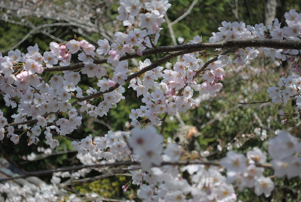

Man skal sørge for at veksle penge inden man kommer til Japan, eller hæve når man ankommer. Der er rigtig mange steder, hvor det ikke er muligt at bruge kreditkort til at betale med – så sørge for altid at hæve kontanter i backup.
Husk at du maksimalt kan hæve 2.000 kr. på et VISA kort i en automat i udlandet, men når du benytter det i butikker kan dog bruge meget mere.
Derudover koster det normalt et gebyr på 30 kr. hver gang du hæver penge i en automat i udlandet. Så sørg for at veksle nogle penge hjemmefra. Jeg havde 50.000 Japanse Yen med hjemmefra. Men det var slet ikke nok. Jeg hævede ca 2*30.000 mere i løbet af den måned jeg var i Japan.
Hoteller tæller jeg ikke med heri, da de fleste blev booket online og derfor betalt med det samme.
Priser i Japan
Da jeg kom fra New Zealand til Japan, havde jeg regnet med, at priserne ca var de samme. Men det vidste sig, at der generelt var billigere i Japan end i Danmark.
En god huske regel, er at de Japanske priser er ca 60% af de danske.
Her er et par eksempler på priser i Japan:
- Priserne på restauranter er generelt billigere end i Danmark.
- Dagligvarer er generelt samme pris som i Danmark, hvor frugt og grønt godt kan være dyrere end i Danmark.
- Hoteller på omkring 3 stjerner fås til cirka 400 kr. pr. overnatning
- Men hvis du virkelig vil spare, så gå efter hostels eller japanske kapsel hoteller.
Hvornår skal man komme til Japan

I min mening er det bedst at tage til Japan i foråret.. I april/maj måned kan du se alle de smukke kirsebærtræer (se billede) springe ud.
Lidt senere på foråret stiger temperaturen som da vi var afsted i maj måned, hvor det var 25-30 grader det meste af tiden. Vær dog opmærksom på, at der godt kan være dage med regn, så sørg for at anskaffe en parably eller tag en med hjemmefra.
I sommermånederne juli/august bliver det utrolig varmt og fugtigt i Japan, så her er der ikke specielt rart at rejse rundt.